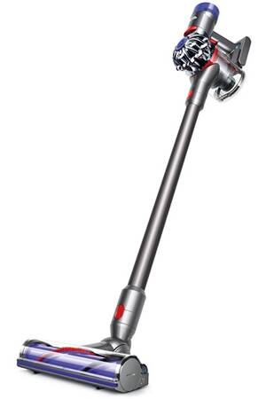
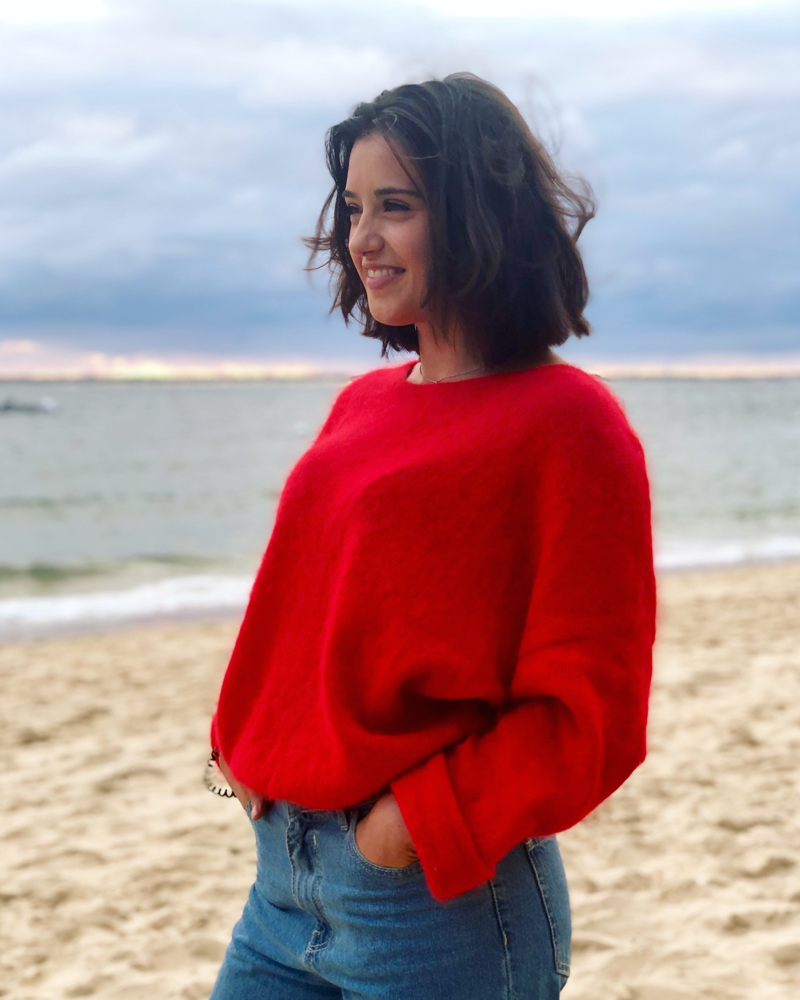

My First Webpage
Hello World! Hello World!
My name is Pierre Pando.
Here you can learn more about me!
First of all, I'll tell you about my passions. I love cleaning and what I particularly like is vacuuming my whole apartment when I'm not travelling.
My favorite vacuum cleaner is the broom vacuum cleaner from Dyson.

Indeed, cleaning is very beneficial to me in terms of spirituality and mental well-being.
It allows me to relax and enjoy the new music available on Apple Music.
It started 3 years ago when I met Maud Bansse.
Who is my friend Maud Bansse?
Quite simply, she is a young student who lives right across the street from me.
She is as beautiful as her apartment (even if it was not tidy when we met).
Indeed, Maud was in her pajamas with her cup of coffee, when all of a sudden I saw her apartment where she had been living for 3 years, like me.
I then offered to help her clean up her apartment with me so that we could be in a good mood for the whole day.

We have a great time together. We shop, eat at restaurants and go out on weekends when we have some free time.

One thing that is also part of my life is travel.
Indeed, I love travel, it allows me to learn more about the world and to see the different cultures of each other's customs.
Thanks to the many trips I was able to make, I was able to have memories in my head and keep some pictures on my phone or camera.
One of the trips that will remain to be remembered is the road trip to California with my whole family.
We spent 3 weeks in the American West and it was an adventure full of excitement and emotion.
Tutorials
My other websites